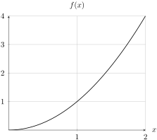
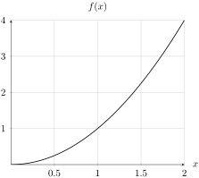

Section4.2IN2: Approximating Areas and the Definite Integral
Objectives
IN2
I can compute exact or approximate values for integrals using Riemann sums, properties of definite integrals, the definition of the definite integral, and geometry
Hint: The function is given by \(y=\sqrt{1-x^2}\text{;}\) if you aren’t sure about graph, try rearranging so that there aren’t any roots... is that a familiar expression?
Activity4.2.2.
Use the image below to find the value of the definite integrals below.
Figure4.2.2.An image of a piecewise function
(a)
\(\ds \int_0^2 f(x)\, dx\)
\(\displaystyle 2\)
\(\displaystyle 4\)
\(\displaystyle 3\)
\(\displaystyle 6\)
(b)
\(\ds \int_0^5 f(x)\, dx\)
\(\displaystyle 10\)
\(\displaystyle 6\)
\(\displaystyle 7\)
\(\displaystyle 5\)
(c)
\(\ds \int_5^7 f(x)\, dx\)
\(\displaystyle 3\)
\(\displaystyle 6\)
\(\displaystyle -6\)
\(\displaystyle -3\)
(d)
\(\ds \int_0^9 f(x)\, dx\)
\(\displaystyle -5\)
\(\displaystyle 5\)
\(\displaystyle 2\)
\(\displaystyle 9\)
Activity4.2.3.
In Activity 4.2.1 and Activity 4.2.2, we were able to use known geometric formulas to find the areas under the curve. However, this is an extreme exception to the usual rule.
(a)
Below is the graph of \(f(x) = x^2\) on a grid. Which value does your group feel is the best approximation of \(\ds \int_0^2 x^2\, dx\text{?}\) Be prepared to defend your group’s answer.

Figure4.2.3.A graph of \(f(x) = x^2\) on \([0,2]\)
2.25
2.5
2.75
3
3.25
3.5
(b)
The grid from part (a) has been made finer; which answer does your group feel is closest to the true answer to \(\ds \int_0^2 x^2\, dx\text{?}\)

Figure4.2.4.A graph of \(f(x) = x^2\) on \([0,2]\)
2.25
2.5
2.75
3
3.25
3.5
(c)
Which image do you feel gives you the best chance of approximating \(\ds \int_0^2 x^2\, dx\text{?}\) Why?
First image
Second image
Definition4.2.5.Left/Right Riemann Sum.
Consider the definite integral \(\ds \int_a^b f(x)\, dx\) on the interval \([a,b]\text{.}\) The left Riemann sum/approximation is the approximation
\begin{equation*}
L_n = f(x_0)\Delta x + f(x_1)\Delta x + \cdots + f(x_{n-1})\Delta x \approx \int_a^b f(x)\, dx
\end{equation*}
and the right Riemann sum/approximation is the approximation
\begin{equation*}
R_n = f(x_1)\Delta x + f(x_2)\Delta x + \cdots f(x_n)\Delta x \approx \int_a^b f(x)\, dx
\end{equation*}
where \(n\) is the number of subdivisions made to \([a,b]\) and \(\Delta x = \dfrac{b-a}{n}\) is the length of each subdivision.
Remark4.2.6.
Using sigma notation, we can rewrite
\begin{equation*}
L_n = f(x_0)\Delta x + f(x_1)\Delta x + \cdots + f(x_{n-1})\Delta x = \sum_{i=0}^{n-1}(f(x_i)\Delta x)
\end{equation*}
and
\begin{equation*}
R_n = f(x_1)\Delta x + f(x_2)\Delta x + \cdots f(x_n)\Delta x = \sum_{i=1}^n (f(x_i)\Delta x)
\end{equation*}
Activity4.2.4.
Again, consider \(f(x) = x^2\) on the interval \([0,2]\text{.}\) We will compute \(L_8\) and \(R_8\text{.}\)
(a)
Which is the appropriate expression for \(L_8\text{?}\)
The value of \(x_0\) is \(0\text{,}\) because that is the beginning of the interval; what is the value of \(x_6\text{?}\) Use this idea to find \(x_0,x_1,...,x_8\)
\(\displaystyle \dfrac{3}{4}\)
\(\displaystyle \dfrac{6}{4}\)
\(\displaystyle \dfrac{1}{2}\)
\(\displaystyle \dfrac{6}{8}\)
(c)
Using (a), (b), and Definition 4.2.5, which is the correct value of \(L_8\text{?}\) A calculator will be helpful here.
\(\displaystyle 2.1875\)
\(\displaystyle 3.1875\)
\(\displaystyle 1.59375\)
\(\displaystyle 12.75\)
(d)
Using (a), (b), and Definition 4.2.5, which is the correct value of \(R_8\text{?}\) A calculator will be helpful here.
\(\displaystyle 2.1875\)
\(\displaystyle 3.1875\)
\(\displaystyle 1.59375\)
\(\displaystyle 12.75\)
(e)
If you wanted a better approximation, what does your group feel must be done to the subintervals?
Activity4.2.5.
Consider a moving car, with increasing velocity. The velocity was measured every two seconds, and the results collected in the table below.
Time (sec)
0
2
4
6
8
10
Velocity (ft/s)
20
30
38
44
48
50
(a)
Find an upper estimate for the distance the car traveled in 10 seconds.
(b)
Find a lower estimate for the distance the car traveled in 10 seconds.
Remark4.2.7.
Recall that in Activity 4.2.4 we approximated the area between the curve \(f(x) =x^2\) and the \(x-\)axis on the interval \([0,2]\) by approximating \(\ds \int_0^2 x^2\, dx\) with left and right rectangles. Part (e) asks: if we want a better approximation (than \(R_8\) or \(L_8\)), what must be done to the subintervals? What was your group’s response?
Definition4.2.8.The Definite Integral (Limit Definition).
Let \(f(x)\) be a function with a finite number of discontinuities on the interval \([a,b]\text{,}\) none of which are infinite. Then, the definite integral of \(f(x)\) on \([a,b]\) is given by
A function for which the definite integral exists is said to be integrable.
Theorem4.2.9.Properties of the Definite Integral.
Let \(a,b\) be real numbers with \(a \lt b\text{,}\) and let \(k\) be a constant. Let \(f(x)\) and \(g(x)\) be integrable functions on \([a,b]\text{.}\) Then,
\(\ds \int_a^b f(x)\, dx = \int_a^c f(x)\, dx + \int_c^b f(x)\, dx
\text{,}\) for some \(c\text{.}\)
Activity4.2.6.
If \(\ds \int_0^5 f(x) = 12\) and \(\ds \int_0^8 f(x)\, dx = -3\text{,}\) what is \(\ds \int_5^8 f(x)\, dx\text{?}\)
Activity4.2.7.
We will find the exact value of \(\ds \int_0^2 x^2\, dx \text{.}\)
(a)
Which is the correct value of \(\Delta x\text{?}\)
\(\displaystyle 2\)
\(\displaystyle \dfrac{2}{4}\)
\(\displaystyle \dfrac{2}{8}\)
\(\displaystyle \dfrac{2}{n}\)
(b)
In order to compute the height of a rectangle, \(f(x_i)\text{,}\) first we need to determine the generic expression for an input in the interval, \(x_i\text{.}\) This formula is given by \(x_i = a + i\Delta x\text{.}\) Use this fact to determine the correct value of \(f(x_i)\text{:}\)
\(\displaystyle \dfrac{4i}{n}\)
\(\displaystyle \dfrac{2i^2}{n^2}\)
\(\displaystyle \dfrac{4i^2}{n}\)
\(\displaystyle \dfrac{4i^2}{n^2}\)
(c)
Use parts (a) and (b) to write a simplified expression for \(f(x_i)\Delta x\text{,}\) the area of the \(i\)-th rectangle in the subinterval.
(d)
The next part of the definition of the definite integral finds the approximation of the area under the curve on the entire interval, \(R_n\text{.}\) In order to compute it, we need to know two facts:
An object falls under constant acceleration in free-fall; on Earth, acceleration due to gravity is \(-9.8\) m/s\(^2\text{.}\) So, let \(a(t) = -9.8\text{.}\)
(a)
Which option gives \(v(t)\text{,}\) the antiderivative of \(a(t)\text{,}\) and its proper units?
\(9.8t\) m/s
\(9.8\) m/s\(^2\)
\(9.8t\) m/s\(^2\)
\(9.8\) m/s
(b)
Compute \(\ds \int_0^1 v(t)\, dt\text{.}\) What are the units of the integral?
(c)
Your answer in (b) has a physical meaning; which is it?
The change in velocity between \(t=0\) and \(t=1\) seconds
The change in position between \(t=0\) and \(t=1\) seconds
The position after 1 second
The velocity after 1 second
Activity4.2.10.
The function \(P(x)\) represents the rate of change of population (in people per year) in a quiet mountain town. At \(x=0\) years after 2000, the town’s population was 15000; suppose that \(\ds \int_0^{10} P(x)\, dx = -1210\text{.}\) Which interpretation is most correct?
In 2010, the population was decreasing by 1210 people per year
In 2010, there were -1210 people
Between 2000 and 2010, the population decreased by 1210 people per year
Between 2000 and 2010, the population decreased by 1210 people